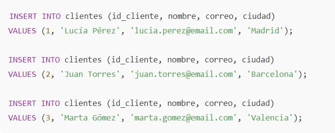
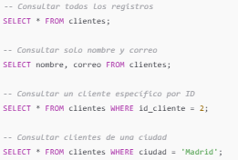
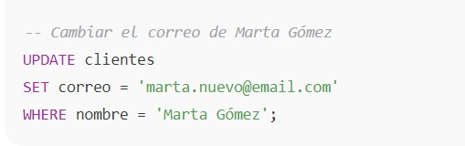
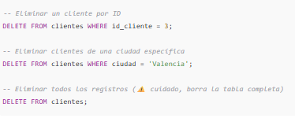

CouchDB es una base de datos NoSQL orientada a documentos, desarrollada por la Apache Software Foundation, que almacena la información en formato JSON y utiliza HTTP/REST como protocolo de comunicación, lo que la hace muy amigable para aplicaciones web y móviles. Su principal característica es que implementa un modelo de replicación distribuida y tolerante a fallos: permite sincronizar datos fácilmente entre distintos servidores o incluso dispositivos desconectados (offline-first), garantizando alta disponibilidad y consistencia eventual. Además, usa MapReduce con JavaScript para realizar consultas y vistas personalizadas, cuenta con un sistema de control de versiones de documentos (cada documento tiene revisiones) y ofrece una interfaz web llamada Fauxton para administración sencilla. En resumen, la función principal de CouchDB es servir como una base de datos distribuida, flexible y confiable, ideal para entornos donde se necesita sincronización entre múltiples nodos, aplicaciones desconectadas que luego se actualizan, y gestión de datos en la nube con una arquitectura orientada a documentos.



